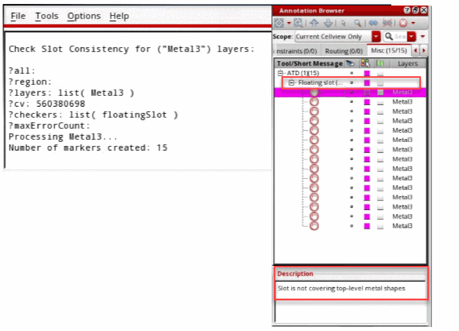

9
Managing Metal Density
The metal density in a layout design needs to be managed to ensure that there is uniform metal distribution across the chip for manufacturing. In order to address and manage metal density issues, such as density checks, thin or local analysis, and fixing density errors through slotting, a new, Metal Density, toolbar has been introduced. The Metal Density toolbar provides an interactive and user-friendly approach to address and manage the metal density issues. This toolbar is available in Layout XL and higher tiers. Depending on the layout tier, specific number of tokens are required to access the slotting feature. For more information, see
This Chapter covers the following topics:
- Metal Density Toolbar
- Performing Metal Density Checks for Shapes
- About the Specification Cell
- Support for Slot Shapes in DRD and EAD
Metal Density Toolbar
To maintain the integrity of the original shape as long as possible, slotting lets you add slot shapes to the original shape, such as wires and polygons. For more information on how to convert the original shapes covered by the slot shapes into slotted polygons, see lxConvertSlotToPolygon. Also, the slotted shapes can be edited, if required, to solve the electro-migration violations. In addition, the slot shapes are created into a figGroup to prevent any incorrect manipulation.
Using the Metal Density toolbar, you can perform DRC correct slotting, maxDensity checks, and analyze any kind of shapes. The different scopes provide a smooth and user-friendly experience of the entire design, a specific region, one or more layers, the current window, or by selection. In addition, the toolbar provides an options form for maxDensity checks and local slotting statistic reports. The Metal Density toolbar has the following buttons for metal density checks and slotting.

-
Check Density

Checks the maximum metal density rules according to the foundry constraints under different scopes.As a prerequisite for the density checks, the maximum density rules need to defined in the technology library.Command Lets you Check the maximum density rule in the area defined by the two specified points in the design.
Check the maximum density rule in the current window (layout canvas limit).
-
Density Analysis

Reports the local density of each slotted shape, which means that for each slotted shape, its total slotted surface over its associated shape surface is reported.-
Check Slot Consistency
Checks the consistency of the slot shapes in the design. If conditions do not match, an error marker is displayed in the Annotation Browser.
-
Check Slot Consistency
-
Fix Density

Adds slot shapes using the metal layer-purpose pairsloton any kind of objects, such as wires, paths, rectangles or polygons. The geometries of the slot shapes are default. These geometries can also be customized using the Metal Density Options form. -
Tools

Lets you delete slots, or convert and reconstruct a polygon to slots.-
Delete Slots
Deletes the slot shapes on objects according to the scope of the deletion. -
Convert Slots

Converts the original shapes covered by the slot shapes into slotted polygons.
Environment Variable: hideConvertToPolygon -
Reconstruct Slots

Reconstructs a slotted polygon to a regular polygon that has no holes and also covers the slot shapes.
Environment Variable: hideReconstruct
-
Delete Slots
-
Options
Opens the Metal Density Options form and lets you specify the metal density options. The form contains all the geometric and style settings for the generation of the slot shapes. In addition, it contains valid layers that can be considered by each shape for checking, analysis, and fixing metal density. For more information, see Metal Density Options Form.
Related Topics
Performing Metal Density Checks for Shapes
You can check, analyze, and fix metal density for various routing shapes, such as for wires and polygons.
To perform metal density checks for shapes, perform the following steps:
-
Click the arrow next to the Check Density icon on the Metal Density toolbar. A drop-down menu appears.
-
Depending on the scope that you want, click an option from the drop-down list.
The following figure shows the result of the metal density check when the Check Density All option is selected.
. -
Click the Options icon on the Metal Density toolbar.
The Metal Density Options form appears.
- Select a material to be processed from the Material drop-down list. By default, metal is selected.
-
From the Layers list box, select a layer, for example
Metal3. The selected layers are used for checking, analyzing, and slotting.
The fields in the other tabs of the form are pre-populated with the values defined in the environment variables in the.cdsenvfile. You can edit the options needed to define the size and spacing of the slot shapes in the Slot Geometry tab of the Metal Density Options form. Also, you can edit the advanced slotting settings in the Slotting Style tab.

-
Specify the type of consistency checks that you want to run for the slot shapes in the Slot Consistency page, For more information, see Slot Consistency Tab.

- To close the form, click Close.
-
Click the arrow next to the Fix Density icon on the Metal Density toolbar. A drop-down menu appears.

-
Depending on the scope that you want, click an option from the drop-down list to perform slotting.
The following figure shows the result when the Slotting All option is selected to slot the shapes and fix metal density.
-
Click the arrow next to the Density Analysis icon on the Metal Density toolbar. A drop-down menu appears. You can either perform density analysis of each slotted shape or check for the correctness and consistency of the slot shapes.

-
To report the local density of each slotted shape, click an option, depending on the scope that you want, from the drop-down list.
The following figure shows the report of the local density check when the Density Analysis All option is selected.
-
To check for the consistency and correctness of the slot shapes, select the required Slot Consistency option. The slot consistency checks can be specified in the Slot Consistency Tab of the Metal Density Options form. For example, to check for a floating slot shape, select the Floating Slot option. The following figure shows the report of the consistency check along with the markers being displayed in the Annotation Browser, when the Check Slot Consistency All option is selected.
-
To report the local density of each slotted shape, click an option, depending on the scope that you want, from the drop-down list.
-
Click the arrow next to the Tools icon on the Metal Density toolbar. A drop-down menu appears. You can either delete the slots on the polygon or convert and reconstruct the slots on the polygons.
-
To delete a slot shape on a polygon, click an option, depending on the scope that you want, from the drop-down list.
The following figure shows the result when the Delete Slots by Area option is selected to delete the slots by area. -
To convert the original shape covered by the slot shapes into slotted polygons, click an option, depending on the scope that you want, from the drop-down list.
The following figure shows the result when the Convert Slots option is selected to convert a polygon to slot shapes.
-
To reconstruct a slotted polygon to a regular polygon that has no holes and also covers the slot shapes, click an option, depending on the scope that you want, from the drop-down list.
The following figure shows the result when the Reconstruct Slots option is selected to reconstruct a slotted polygon shape into a regular polygon.
-
To delete a slot shape on a polygon, click an option, depending on the scope that you want, from the drop-down list.
- Click Slotting on the Metal Density Options form. For more information, see Metal Density Options Form (ICADVM18.1 EXL Only).
Related Topics
About the Specification Cell
To handle contextual situations and to apply directives per layer, you can specify a cell name (specification cell). The specification cell is a cellview that contains, for each concerned layers, the representation of the directional slot shapes and the turn slot shapes. The syntax to specify it in the Metal Density Options form is libName/cellName/ViewName.
The check box next to the Specification Cell field is used to enable or disable the field.

When a specification cell is specified, all the geometric information for each layer is derived from the specified cell. For each layer, the following information is derived.
- A physical shape that represents the directional slot and the turn slot (optional) geometries. It implicitly defines the following slot parameters by its bBox:
- Optionally, some of the parameters in the specification cell are defined using:
In case a list of contexts is defined using the sltSetContextSpecificationCells SKILL function, the Context field is available in the Slot Geometry tab of the Metal Density Options form. Instead of the string field for the Specification Cell, a drop-down list is available, which lists the defined contexts.
When a context is selected from the Context drop-down list, the slot geometry parameters are disabled. All the disabled parameters must be defined in the specification cell corresponding to the selected context. Else, the slotting cannot be completed and the status of the Slotting button is updated and the color is changed to Red.
The following figures shows the cellview and the slot shape properties.

- The parameters derived from the specification cell take precedence and override the values that are available in the Metal Density Options form. If one of the above properties is not defined for the specification cell, then the values from the Metal Density Options form is used.
- The lower-left corner should be (0,0) for the directional slot shape and the upper-right corner should be (0,0) for the turn slot shape.
- The slot shape should be drawn in the direction of the current (from left to right).
- If the turn slot is not defined, then the width of the direction slot is used to adjust the size of the shape at turn (square).
- The purpose slot should be used.
The following figure shows an example of a specification cell.
The following figure shows the result of slotting when the Slotting All option is selected. As you can see, slotting is different on the two shapes.
Related Topics
Support for Slot Shapes in DRD and EAD
The added slot shapes are supported both by the DRD checker and EAD. For DRD, the maximum density checks support the slot shapes.
In EAD, the R extraction as well as the EM analysis consider the slot shapes using the layoutEAD.pex doSlotting environment variable.
Related Topics
Return to top